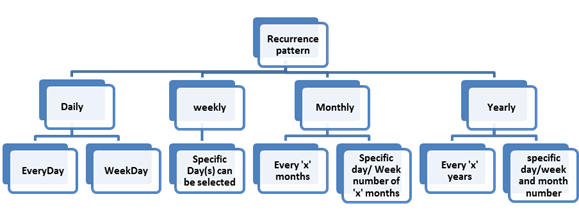
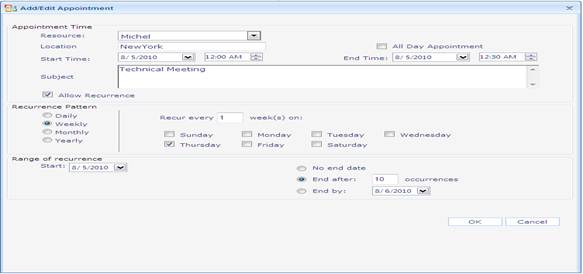
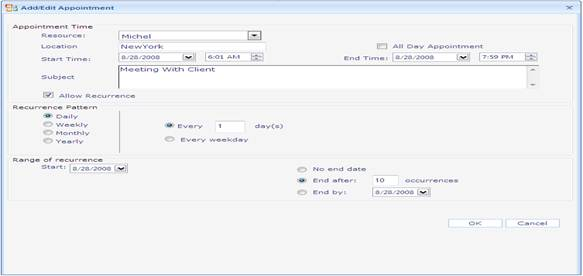

Recurrence Patterns
As the name implies, recurring appointments repeatedly display appointments depending on the recurrence pattern. You have to set the AllowRecurrence property to True in order to allow the appointments to recur. There are four existing patterns already available, 1) Daily 2) Weekly 3) Monthly 4) Yearly. For each pattern, the subpatterns available are shown in the following screenshot:

Figure 54: Recurrence Patterns
Use Case Scenarios
The recurrence appointments are useful in scheduling appointments, which occur at regular intervals. For example, scheduling an appointment every Monday of the week. By using the recurrence appointment, the user can save time by creating one appointment instead of each appointment separately. The following screenshot shows the appointment add dialog to add the recurrence appointments.

Figure 55: Dialog with Recurrence Patterns
Properties
Table 1: Property/ies Table
|
Property |
Description |
Type |
Data Type |
|
RecurrencePattern |
Indicates the pattern of recurrence. The default pattern is Daily. The options included are as follows: 1. Daily 2. Weekly 3. Monthly 4. Yearly |
Server-Side |
Enum |
|
OccurrenceNumber |
Denotes the number of occurrences of a recurred appointment. |
Server-Side |
Integer |
|
StartRecurrence |
Denotes the Start date and time of recurrence. |
Server-Side |
DateTime |
|
EndRecurrence |
Denotes the End date and time of recurrence. |
Server-Side |
DateTime |
|
StepValue |
Denotes the step value for recurrence, i.e. to specify the appointments recur in every ‘x’ days/weeks/months/years. Accepts the values 1, 2, 3, 4…….. The default value is 1. |
Server-Side |
Integer |
|
DailySubPattern |
Denotes the subpattern within the Daily recurrence pattern. Accepts the values “EveryDay” or “WeekDay”. The default value is “EveryDay. |
Server-Side |
Enum |
|
MonthlySubPattern |
Denotes the subpattern within the monthly recurrence pattern. (Accepts the values “MonthlyDay” or “MonthlyWeek”). |
Server-Side |
Enum |
|
MonthWeekNumber |
Denotes the week number value within the month. (Accepts the values “First”, “Second”, “Third”, “Fourth” and “Last”). |
Server-Side |
Enum |
|
MonthWeekDay |
Denotes the specific day values. (Accepts the values “Day”, WeekDay”, “WeekEndDay”, “Sunday”, “Monday”, “Tuesday”, “Wednesday”, “Thursday”, “Friday”, “Saturday”). |
Server-Side |
Enum |
|
YearlySubpattern |
Denotes the subpattern within the Weekly recurrence pattern. (Accept the values “YearlyMonthDay” or “YearlyMonthWeek”). |
Server-Side |
Enum |
|
MonthDateValue |
Denotes the month date value. |
Server-Side |
Integer (Accepts values 1 to 31. The default value is 1) |
|
MonthNumber |
Denotes the month number value. |
Server-Side |
Integer (Accepts values 1 to 12. The default value is 1) |
Adding Recurrence to an Application
The recurrence appointments are added to Schedule control by setting the “AllowRecurrence” property to true for the Appointment object. Please refer to the following code snippet.
|
[ASPX] <Syncfusion:Schedule ID="Schedule1" AutoFormat="Office2007Blue" runat="server" Height="592px" Width="775px" StartDate="2008-08-28" "> <Appointments> <syncfusion:ScheduleWebAppointment AllowReccurence="true" EndTime="08/28/2008 07:53:00" NotifyOnOveride="false" StartTime="08/28/2008 07:23:00" UniqueID="0"> <Recurrence EndReccurence="12/28/2008 07:53:00" OccurrencesNumber="5" ReccurencePattern="Daily" DailySubPattern="EveryDay" StartReccurence="08/28/2008 07:23:00" StepValue="3" /> </syncfusion:ScheduleWebAppointment> </Appointments> </Syncfusion:Schedule> |
Daily Recurrence Pattern
When the recurrence pattern is set to “Daily”, you have two options by setting the property DailySubPattern to either “EveryDay” or “WeekDay”. The first and default option is “EveryDay”. By setting this option, appointments will recur on any day in a week. The second option is “WeekDay”, which allows the recurrence appointments to happen only in week days (i.e. Mon-Fri). The following code illustrates this.
|
[ASPX] <Syncfusion:Schedule ID="Schedule1" AutoFormat="Office2007Blue" runat="server" Height="592px" Width="775px" StartDate="2008-08-28" "> <Appointments> <syncfusion:ScheduleWebAppointment AllowReccurence="true" EndTime="08/28/2008 07:53:00" NotifyOnOveride="false" StartTime="08/28/2008 07:23:00" UniqueID="0"> <Recurrence EndReccurence="12/28/2008 07:53:00" OccurrencesNumber="5" ReccurencePattern="Daily" DailySubPattern="EveryDay" StartReccurence="08/28/2008 07:23:00" StepValue="3" /> </syncfusion:ScheduleWebAppointment> </Appointments> </Syncfusion:Schedule> |
Weekly
When the recurrence pattern is set to "Weekly", you have to mention the Starting Day of the week, from which the appointments have to start recurring. You can make use of the following properties to set the starting day.
· UseMonday: Appointments start recurring on the first Monday from the start date of the appointment
· UseTuesday: Appointments start recurring on the first Tuesday from the start date of the appointment
· UseWednesday: Appointments start recurring on the first Wednesday from the start date of the appointment
· UseThursday: Appointments start recurring on the first Thursday from the start date of the appointment
· UseFriday: Appointments start recurring on the first Friday from the start date of the appointment
· UseSaturday: Appointments start recurring on the first Saturday from the start date of the appointment
· UseSunday: Appointments start recurring on the first Sunday from the start date of the appointment
Along with this, the stepvalue is specified to make appointments recur every ‘X’ months. The following code example illustrates this:
|
[ASPX] <Syncfusion:Schedule ID="Schedule1" AutoFormat="Office2007Blue" runat="server" Height="592px" Width="775px" StartDate="2008-08-28" "> <Appointments> <Syncfusion:ScheduleWebAppointment AllowReccurence="True" EndTime="08/28/2008 10:53:00" NotifyOnOveride="False" StartTime="08/28/2008 10:23:00" UniqueID="1"> <Recurrence EndReccurence="12/28/2008 10:53:00" OccurrencesNumber="5" ReccurencePattern="Weekly" UseSunday="true" StartReccurence="08/28/2008 10:23:00" UseFriday="true" StepValue="2" /> </Syncfusion:ScheduleWebAppointment> </Appointments> </Syncfusion:Schedule> |
Monthly
When the recurrence pattern is set to “Monthly”, you have two months subpatterns available. The first subpattern is “MonthlyDay”. This subpattern will allow the appointments recur on a specific day of every ‘X’ month. (‘X’ is step value) The second subpattern is “MonthlyWeek”. This subpattern will allow the appointments recur in first/second/third/fourth/last week of Day/ WeekDay/ WeekEndDay/ Sunday/ Monday/ Tuesday/ Wednesday/ Thursday/ Friday/ Saturday of every ‘X month. (‘X’ is step value). The following code illustrates this:
|
[ASPX] <Syncfusion:Schedule ID="Schedule1" AutoFormat="Office2007Blue" runat="server" Height="592px" Width="775px" StartDate="2008-08-28" "> <Appointments> <syncfusion:ScheduleWebAppointment AllowReccurence="true" EndTime="08/28/2008 08:53:00" NotifyOnOveride="false" StartTime="08/28/2008 08:23:00" UniqueID="2"> <Recurrence EndReccurence="12/28/2008 08:53:00" OccurrencesNumber="5" ReccurencePattern="Monthly" MonthlySubPattern="MonthlyWeek" MonthWeekNumber="1" MonthWeekDay="Sunday" StartReccurence="08/28/2008 08:23:00" StepValue="1" /> </syncfusion:ScheduleWebAppointment> </Appointments> </Syncfusion:Schedule> |
Yearly
When the recurrence pattern is set to “Yearly”. You have two subpatterns. The first option is “YearlyMonthDay”. This subpattern will allow appointments recur on a specific day of a particular month for every ‘X’ years. The second subpattern option is “YearlyMonthWeek”. This option will allow the appointments recur on the first/second/third/fourth/last week of Day/ WeekDay/ WeekEndDay/ Sunday/ Monday/ Tuesday/ Wednesday/ Thursday/ Friday/ Saturday of particular month for every ‘X years. The following code illustrates this:
|
[ASPX] <Syncfusion:Schedule ID="Schedule1" AutoFormat="Office2007Blue" runat="server" Height="592px" Width="775px" StartDate="2008-08-28" "> <Appointments> <syncfusion:ScheduleWebAppointment AllowReccurence="true" EndTime="08/28/2008 08:53:00" NotifyOnOveride="false" StartTime="08/28/2008 08:23:00" UniqueID="2"> <Recurrence EndReccurence="12/28/2008 08:53:00" OccurrencesNumber="5" ReccurencePattern="Yearly" YearlySubPattern="YearlyMonthweek" MonthWeekNumber="1" MonthWeekDay="Sunday" MonthNumber=”8” StartReccurence="08/28/2008 08:23:00" StepValue="1" /> </syncfusion:ScheduleWebAppointment> </Appointments> </Syncfusion:Schedule> |
Adding Recurring Appointments Through Code-Behind
The following code snippet illustrates the adding of recurring appointments through code-behind:
|
[C#] ScheduleWebAppointment ap = new ScheduleWebAppointment(); ap.AllDay = false; ap.UniqueID = 1; ap.Content = "Meeting with client"; ap.Subject = "Meeting"; ap.StartTime = new DateTime(2008, 08, 28, 6, 0, 1); ap.EndTime = new DateTime(2008, 08, 28, 7, 59, 59); ap.AllowReccurence = true; //adding recurrance properties to appointment ap.Recurrence.ReccurencePattern= ScheduleAppointmentReccurencePattern.Daily; ap.Recurrence.DailySubPattern = "EveryDay"; ap.Recurrence.EndReccurence = new DateTime(2008, 09, 28); ap.Recurrence.OccurrencesNumber = 10; ap.Recurrence.StepValue = 1; ap.Recurrence.StartReccurence = new DateTime(2008, 08, 28); Schedule1.Appointments.Add(ap); |
|
[VB] Dim ap As ScheduleWebAppointment = New ScheduleWebAppointment() ap.AllDay = False ap.UniqueID = 1 ap.Content = "Meeting with client" ap.Subject = "Meeting" ap.StartTime = New DateTime(2008, 08, 28, 6, 0, 1) ap.EndTime = New DateTime(2008, 08, 28, 7, 59, 59) ap.AllowReccurence = True
'adding recurrance properties to appointment ap.Recurrence.ReccurencePattern= ScheduleAppointmentReccurencePattern.Daily ap.Recurrence.DailySubPattern = "EveryDay" ap.Recurrence.EndReccurence = New DateTime(2008, 09, 28) ap.Recurrence.OccurrencesNumber = 10 ap.Recurrence.StepValue = 1 ap.Recurrence.StartReccurence = New DateTime(2008, 08, 28) Schedule1.Appointments.Add(ap) |
Adding Recurrence Appointments by Default Dialog
The recurrence appointment can be added using the default “Add/Edit” dialog. By double clicking the Schedule control, the dialog will popup and checking the “Allow Recurrence” check box will display the recurrence patterns details. On submitting the details by clicking the “OK” button, data will be sent to the server and a new recurring appointment will be created.

Figure 56: Dialog for Adding Recurrence Appointment
Sample Link
To access the Recurrence sample:
1. Open the Syncfusion Dashboard.
2. Click User Interface.
3. Click the ASP.NET drop-down list, and select Locally Installed Samples.
4. Select Essential Schedule from Other Products tab.
5. Navigate to Basic Features- ->Recurrence Demo sample.